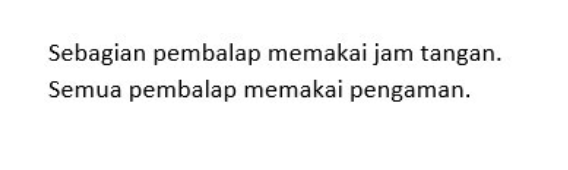
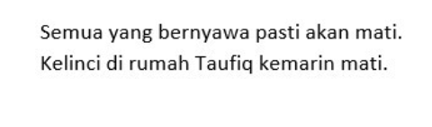

Pilihlah satu kata yang memiliki makna yang paling jauh dari 4 kata lainnya!
PANJANG
LAMBAT
PENDEK
TINGGI
RENDAH
Pilihlah satu kata yang memiliki makna yang paling jauh dari 4 kata lainnya!
SENIN
SELASA
KAMIS
JUMAT
SABTU
Pilihlah satu kata yang memiliki makna yang paling jauh dari 4 kata lainnya!
MENANAM
MENCANGKUL
MEMANEN
MEMUPUK
MENGUKIR
Pilihlah satu kata yang memiliki makna yang paling jauh dari 4 kata lainnya!
DISKON
RABAT
BONUS
KORTING
POTONGAN HARGA
Pilihlah satu kata yang memiliki makna yang paling jauh dari 4 kata lainnya!
BITCOIN
ETHEREUM
TITANIUM
DOGECOIN
BINANCE
Pilihlah satu kata yang memiliki makna yang paling jauh dari 4 kata lainnya!
ASTEROID
KOMET
BINTANG
SATELIT
MATAHARI
Pilihlah satu kata yang memiliki makna yang paling jauh dari 4 kata lainnya!
MELUKIS
MEMAHAT
MENGUKIR
MENYELAM
MEMBUTSIR
Pilihlah satu kata yang memiliki makna yang paling jauh dari 4 kata lainnya!
TUA
RENTA
WREDA
JOMPO
PENSIUN
7 + 7 x 7 - 7 =… !
40
28
49
91
39
45
125
625
1225
2025
15 x 3 : 1 – 6 =...
36
39
40
42
47
60 - 12 x 4 + 17 = ...
23
25
27
29
31
2
5
10
15
16
165
197
208
625
707
24
28
32
36
42
2,4
24,04
-0,24
-0,04
0,04
Pilihan A
Pilihan B
Pilihan C
Pilihan D
Pilihan E
Pilihan A
Pilihan B
Pilihan C
Pilihan D
Pilihan E
5 km + 20 hm + 600 dm =… m
760
5.260
32
7.600
7.060
Pilihan A
Pilihan B
Pilihan C
Pilihan D
Pilihan E
Sebuah kapal memiliki persediaan tambang sepanjang 1 km. Pada hari pertama berlayar digunakan sepanjang 50 dam, pada hari kedua 15.000 cm, dan pada hari ketiga 250 dm. Berapakah panjang tambang yang masih tersisa?
275 m
295 m
315 m
325 m
350 m
5 L
4,5 L
4 L
3 L
2,5 L
4 gross + 6 lusin + 12 kodi =…
887 buah
74 buah
72 lusin
780 buah
74 lusin
1,5 milenium + 10 abad + 40 dasawarsa =...
29 abad
290 tahun
2.900 bulan
920 tahun
650 lustrum
Sebuah kantin memiliki 1/6 gross dan 3 kodi botol minuman. Jika minuman yang terjual sebanyak 23 botol minuman, maka berapa jumlah botol minuman yang tersisa?
60
61
62
63
64
Sebuah toko kue menyimpang persediaan terigu di gudang sebanyak 500 kg terigu, 4,5 ton gula pasir dan 3 kuintal telur. Berapa berat total barang yang ada di gudang tersebut?
5.300 kg
3.700kg
3.500
6.300
1.200
Jibran dan Rafli pergi ke swalayan untuk membeli buah-buahan. Jibran membayar Rp 11.800,00 untuk 3 apel dan 4 belimbing. Sementara Rafli membayar Rp 30.500,00 untuk 9 apel dan 8 belimbing. Berapakah harga 1 belimbing?
Rp 1.500,00
Rp 1.350,00
Rp 1.335,00
Rp 1.250,00
Rp 1.225,00
Direktur Mitrasiswa mengalokasikan 2/9 anggaran perusahaannya untuk membeli mobil operasional, 4/9 dari anggaran untuk membangun gedung asrama baru, dan 1/9 lagi untuk membeli beberapa unit laptop baru. Anggaran yang tersisa sebesar 18 Miliar. Berapakah jumlah total anggaran semula yang dimiliki?
18 miliar
81 miliar
90 miliar
9 miliar
36 miliar
Dinah berkendara dari Manchester ke London dengan kecepatan 90 km/jam menggunakan mobil. Jarak Manchester ke London 60 km. Jika Dinah berangkat dari Manchester pukul 10:00, pukul berapa Ia akan tiba di London?
10:20
10:30
10:40
11:00
11:30
Sebuah percetakan membeli mesin printer baru untuk mencetak poster. Printer lama hanya mampu mencetak 30 lembar dalam waktu 1 jam, sedangkan printer baru dapat mencetak 50 lembar dalam waktu yang sama. Berapa lama waktu yang dibutuhkan untuk mencetak 200 lembar menggunakan kedua printer tersebut?
1 jam
1,5 jam
2 jam
2,5 jam
3 jam
Pak Adit akan menjual 1 kuintal padi hasil panen miliknya. Ia menjualnya ke Pak Jeremy sebanyak 20 kg, ke Pak Ara 12 kg, dan ke Pak Fauwwaz 15 kg. Ia kemudian membagikan hasil panen miliknya untuk 7 anak yatim masing-masing 2 kg. Berapakah sisa padi milik Pak Adit?
36 kg
37 kg
38 kg
39 kg
40 kg
Toko buku Mitrasiswa mempunyai 100 pegawai dan masih menerima 20 pegawai baru setiap minggunya. Namun, tiap minggu ada 5 pegawai yang keluar. Berapakah lama waktu yang dibutuhkan agar toko mempunyai 250 pegawai.
10 minggu
15 minggu
3 bulan
4 bulan
20 minggu
Fitri ingin memasarkan produknya menggunakan facebook. Tarif untuk biaya iklan adalah 3 hari pertama sebesar Rp 30.000,-/hari, 2 hari berikutnya sebesar Rp 15.000,-/hari, dan setelahnya dikenakan tarif tetap sebesar Rp 5.000,-/hari. Jika Fitri membayarkan uang sebesar Rp 250.000,-, berapa lama produknya akan diiklankan di facebook?
30 hari
31 hari
25 hari
21 hari
40 hari
Gedung asrama putri Mitrasiswa direncanakan akan selesai dibangun dalam waktu 24 hari oleh 10 pekerja. Jika pemilik rumah menginginkan selesai dalam 16 hari, berapa jumlah pekerja yang perlu ditambah?
4 orang
5 orang
8 orang
10 orang
12 orang
Uang Amir banding uang Bagus banding uang Charles adalah 3 : 5 : 8. Jika uang Charles Rp 50.000, -, berapa jumlah uang mereka?
Rp 100.000,00
Rp 120.000,00
Rp 160.000,00
Rp 175.000,00
Rp 200.000,00
Jika Ia berangkat dari rumah pukul 08:00, pada pukul berapa Teguh akan sampai di kantor?
09:45
09:50
09:53
09:55
10:00
Seorang pedagang keliling menempuh perjalanan sejauh 54 km dalam waktu 9 jam. Dalam perjalanannya ia berjalan kaki dengan kecepatan 5 km/jam dan bersepeda dengan kecepatan 8 km/jam. Jarak dia bersepeda (dalam km) adalah …
33
30
27
24
18
Naufa membayar Rp 23.000,00 untuk membeli 3 bolpoin dan sebuah pensil. Toni juga membeli 2 bolpoin dan 3 buah pensil di toko yang sama seharga Rp 20.000,00. Berapakah harga 1 buah pensil?
Rp 3.800,00
Rp 2.000,00
Rp 1.800,00
Rp 1.500,00
Rp 1.000,00
Hasil panen padi milik Pak Taufiq dialokasikan 2/5 bagian untuk anaknya, 1/6 bagian untuk dijual, dan 1/10 bagian untuk dibagikan kepada warga yang kurang mampu. Jika sisa padi milik Pak Taufiq sebanyak 120 kg, berapakah jumlah hasil panen padi milik Pak Taufiq?
200 kg
240 kg
280 kg
300 kg
360 kg
Jarak dari Jakarta ke Mitrcare 70 km. Jaya pergi dari jakarta menuju Mitracare menggunakan sepeda motor dengan kecepatan 50 km/jam. Jika Jaya berangkat pada pukul 08:00, pada pukul berapa Ia akan sampai di Mitracare?
09:24
09:36
09:45
10:00
10:28
Sultan membeli sepeda motor seharga Rp 5.500.000,-. Untuk keperluan perbaikan Ia menghabiskan Rp 2.500.000,-. Satu bulan kemudian, Ia menjual motor tersebut seharga Rp 10.000.000,-. Berapa persen keuntungan yang didapatkan Sultan?
15 %
20 %
25 %
30 %
35 %
Sebuah perusahaan tambang emas melakukan penggalian dan mendapatkan batu mineral ore 50 kg dengan kadar emas 7% pada hari pertama. Pada hari kedua berhasil mendapatkan 60 kg dengan kadar emas 8%, dan pada hari ketiga 70 kg dengan kadar emas 9%. Berapa gram emas yang dihasilkan setelah proses pengolahan?
15.500 gram
14.600 gram
13.250 gram
13.500 gram
15.000 gram
1, 3, 6, 2, 6, 12, 3, 9 , …, ...
4
6
8
18
21
71586, 59241, 46896, ..., ...
12206
22206
24551
34551
37521
A, K, C, N, E, Q, … , …, I
G
T
F
S
H
A, C, E, G, I, K, M, O, Q, S, …, …
420, C, 410, F, 401, I, 393, L, …, …
300
386
O (HURUF O BUKAN 0)
398
R
5, k, 15, m, 60, o, 300, …, …
175
w
405
1.800
q
58
99
85
AFV
AFY
92
48
80
CGJ
CFL
21
14
17
20
18
15
20
21
22
25
Jika 7 + 3 = 100, 8 + 6 = 196, maka 3 + 8 =...
144
169
121
64
243

Semua pembalap memakai jam tangan dan pengaman
Semua pembalap memakai jam tangan
Ada pembalap memakai jam tangan yang tidak memakai pengaman
Sebagian pembalap tidak memakai jam tangan dan pengaman
Sebagian pembalap memakai jam tangan dan pengaman
Ada mahasiswa yang menjadi pemain tenis
Beberapa mahasiswa bukan pemain tenis
Tidak ada mahasiswa yang menjadi pemain tenis
Beberapa pemain tenis bukan pemain bulu tangkis
Pemain bulu tangkis tidak bisa bermain tenis
Caca paling pintar diantara mereka
Eni lebih pintar daripada Dani dan Caca
Eni lebih pintar dari Caca
Mereka bertiga sama pintarnya
Semua jawaban salah
Semua paku tidak tahan panas
Sebagian paku tidak tahan panas
Hanya paku yang tidak tahan panas yang berkarat
Yang berkarat pasti paku
Ada paku yang tidak berkarat
Besok Yonas tidak bekerja
Hari ini Yonas berlibur bersama keluarga
Hari ini Yonas tidak bekerja
Hari ini Yonas tetap bekerja
Besok Yonas kembali bekerja
Farraz tidak suka
Andin cemburu
Andin tidak cemburu
Farras tidak suka namun Andin tetap cemburu
Farraz menyukai Andin
Semua catar sedang berada di kantin atau Kolam renang. Kantin Kosong.
Semua catar sedang berada di kantin
Tak seorangpun ada di kantin
Sebagian catar ada di kolam renang
Semua catar ada di kolam renang
Ada catar di kolam renang

Taufik bukan yang bernyawa
Semua kelinci telah mati
Taufiq sudah mati
Kelinci Taufiq belum mati
Kelinci adalah makhluk yang bernyawa
Atlet yang tidak pandai memasak, tidak pandai berenang
Atlet yang tidak pandai memasak, gemar berenang dan tidak pandai memasak
Atlet yang tidak pandai memasak, pandai melompat dan tidak gemar berenang
Atlet yang tidak pandai memasak, tidak pandai melompat dan tidak gemar berenang